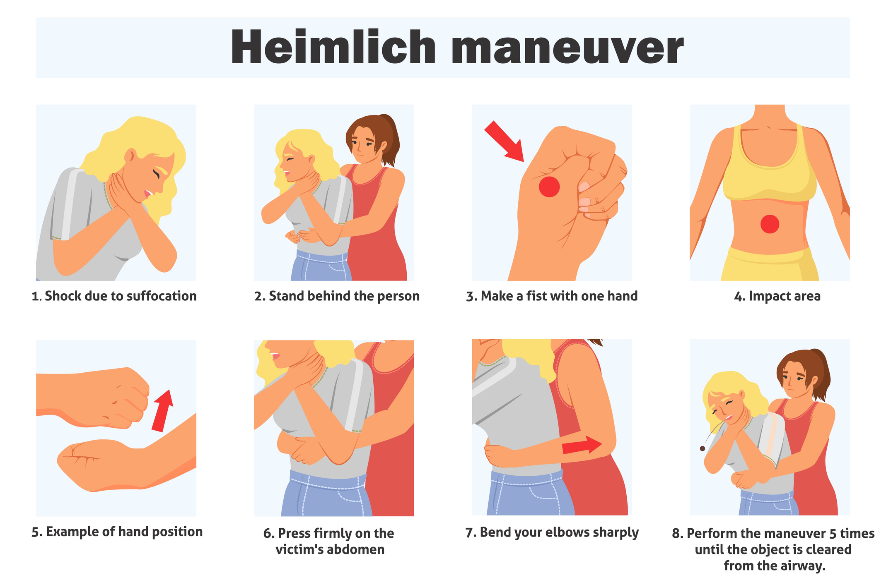
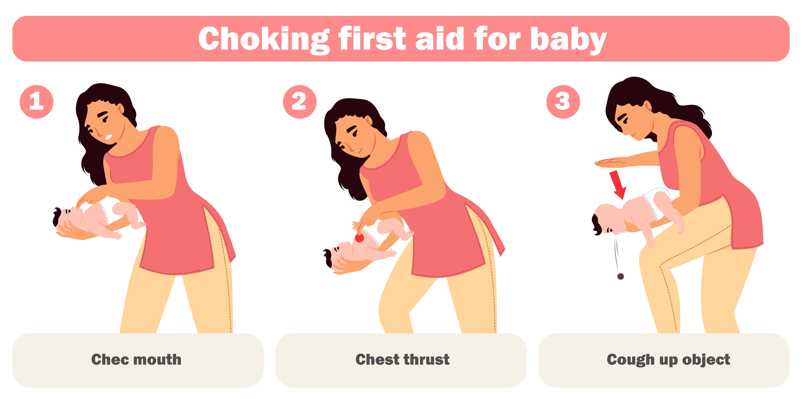
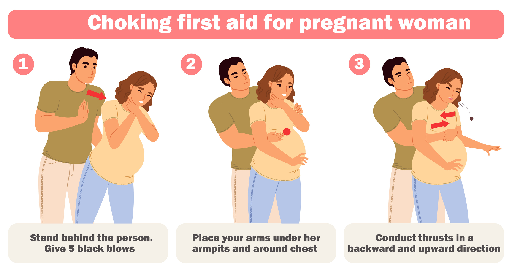
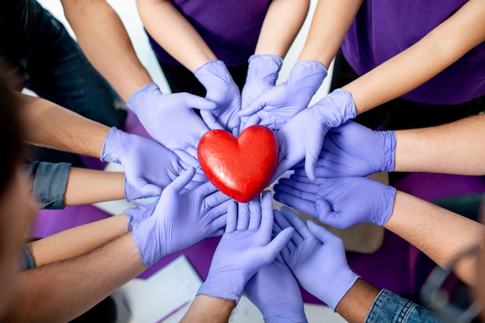

A person who is choking may clutch their throat, be unable to speak, cough ineffectively, or show signs of distress. Immediate action is needed to prevent airway obstruction.
Stand behind the person, wrap your arms around their waist, and place a fist just above the navel. Grasp your fist with your other hand and perform quick, upward abdominal thrusts (Heimlich maneuver) until the object is expelled or the person becomes unresponsive.
If unresponsive, start CPR and check the airway before breaths.
Support the infant’s head and body, place the infant face down along your forearm, and deliver 5 firm back slaps between the shoulder blades. Then turn the infant over and give 5 chest thrusts with two fingers in the center of the chest.
Repeat back slaps and chest thrusts until the object is expelled or the infant becomes unresponsive.
If the person is pregnant or obese, use chest thrusts instead of abdominal thrusts. Always call emergency services immediately in severe choking situations.
In the next module, you’ll learn how two or more rescuers can work together effectively in a clinical setting to perform BLS as a team.
